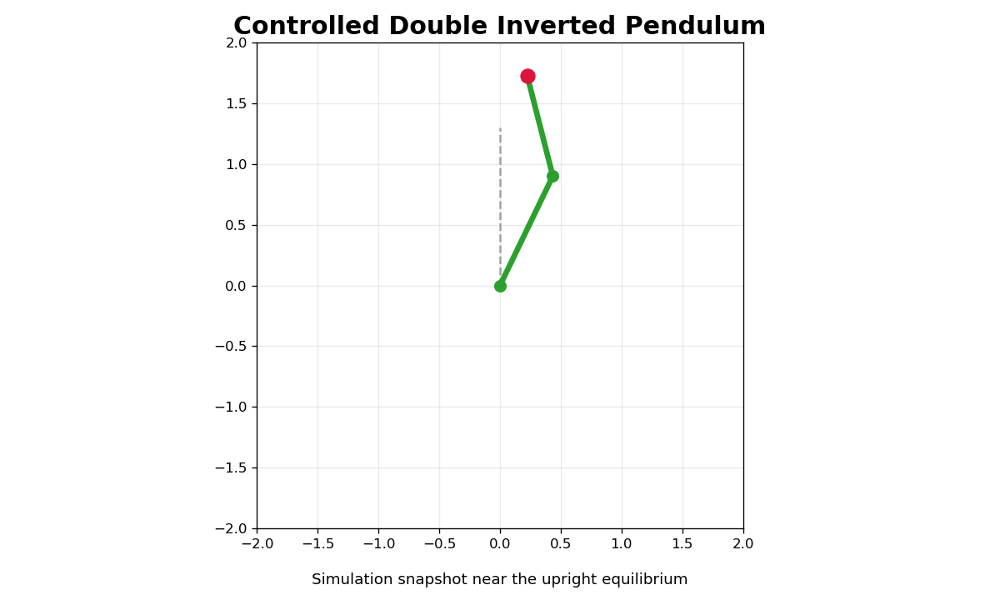

Free motion
A small perturbation near the top is enough to make the uncontrolled system drift away from the upright equilibrium.
Project
The double inverted pendulum is a nonlinear and naturally unstable mechanical system with two coupled links balancing above the pivot. This project shows how the uncontrolled system quickly loses the upright posture, and how LQR feedback can locally stabilize the motion around the upright equilibrium.
A small perturbation near the top is enough to make the uncontrolled system drift away from the upright equilibrium.
Using state feedback, the LQR controller damps the motion and brings the pendulum back toward the upright configuration.
The upright configuration is unstable: if the angles are only slightly perturbed, gravity causes the links to fall away rather than return on their own. Because the two links are coupled, small changes in one part of the system influence the whole motion, which makes the dynamics richer and harder to control than a single pendulum.
LQR does not solve the full nonlinear problem everywhere. Instead, it builds a local feedback law around the upright equilibrium so that, when the system starts close enough to that posture, the controller chooses torques that reduce deviations and stabilize the motion.

Snapshot of the simulated system near the upright operating point used for the local stabilization study.
The state is described by the two link angles and their angular velocities:
[theta1, theta2, dtheta1, dtheta2].
To design the controller, the nonlinear dynamics are linearized around the upright equilibrium. LQR then computes a state-feedback gain that balances state regulation against control effort through quadratic weighting matrices.
The result is a controller that is simple, interpretable, and effective for local stabilization, while remaining tied to the physics of the original nonlinear system.
Static HTML export of the free simulation notebook.
Static HTML export of the stabilization notebook around the upright equilibrium.
Original Jupyter notebook file included with the site.
Original Jupyter notebook file included with the site.
Source repository for the inverted double pendulum project.
This page intentionally includes only the free and LQR-controlled studies. The swing-up notebook is excluded.